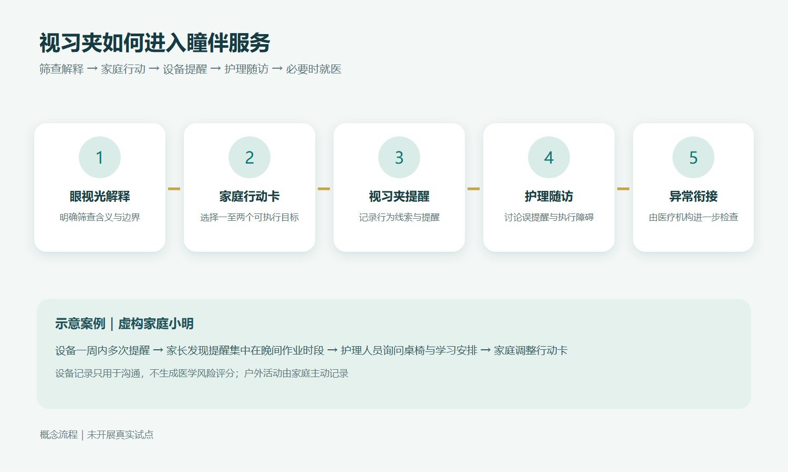
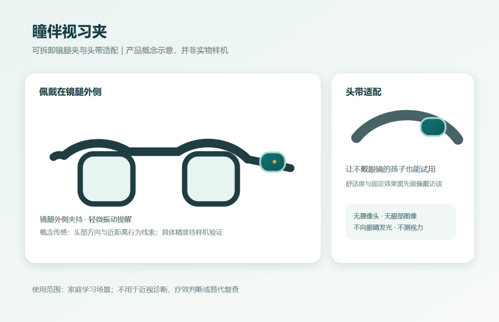
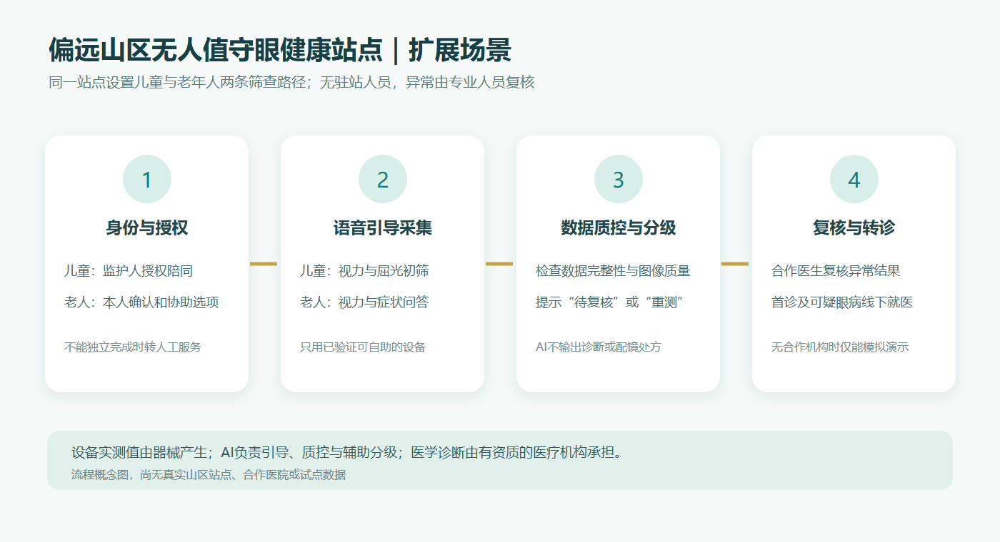

1
结果看得懂
眼视光人员审核结果解释模板与异常转诊规则，把筛查与确诊的区别、下一步建议讲清楚。
视习夹产品 × 眼视光护理服务，一次交付
有资质机构完成视力筛查及必要诊疗，眼视光人员解释结果并设定专业边界，护理人员与家庭共同制定行动卡并开展随访； 视习夹在家庭学习时提供温和提醒，帮助孩子和家长发现难以坚持的用眼习惯。设备记录只提供讨论线索， 不测视力、不诊断近视、也不替代复查。
首期目标是验证“筛查结果能否转化为家庭行动”。服务覆盖结果理解、用眼习惯、复查提醒和异常转诊； 硬件先验证佩戴意愿与提醒体验，再接入服务试点。项目不以短期试点宣称近视度数下降。
眼视光人员审核结果解释模板与异常转诊规则，把筛查与确诊的区别、下一步建议讲清楚。
护理人员与家长确认一至两个可执行目标，例如近距离用眼时安排休息、调整读写姿势或安排日间户外活动。
试点期拟每周简短打卡、每月一次护理随访；发现异常按专业人员审核的流程转诊就医。
国家卫生健康委发布的近视防控资料强调定期检查、日间户外活动和良好读写姿势。这些要求说明行动方向， 但不能直接证明家长需要购买新硬件。瞳伴把“需求”拆成三个可被访谈与试点证伪的断点。
筛查记录与“确诊”的区别、异常指标的含义、下一步该做什么。
户外活动与读写习惯是否能在家庭学习中真正落到日常安排里。
发现异常后能否完成专业检查与复查，而不是停留在一次筛查。
MYOPIA BY SCHOOL STAGE · 用于说明防控需求的普遍性
数据来源：国家疾控局 2022 年全国儿童青少年近视监测。全国数据，非“瞳伴”试点成效。 该数据只说明防控需求的普遍性，不构成对本项目有效性的证明。
及其监护人。这个年龄段是首期产品定位假设，实际需求以访谈为准。
是否有预算、如何采购、是否允许佩戴设备参与活动，均需逐一核实。
承担检查、诊断与治疗；学生团队不以学生身份替代有资质人员开展诊疗。
一次服务从规范筛查记录开始。产品和服务共享行动卡与随访记录，避免设备记录与专业服务各自孤立。
明确筛查含义与边界
选择一至两个可执行目标
记录行为线索与提醒
讨论误提醒与执行障碍
由医疗机构进一步检查

小明在晚间作业时段多次收到提醒 → 家长反馈“提醒太频繁” → 护理人员先核对头带固定是否合适， 再询问桌椅、作业时段和休息安排 → 最后与家庭调整行动卡。
案例展示的是沟通流程，不代表已验证的干预效果；设备记录只用于沟通，不生成医学风险评分。
产品计划利用头部方向和近距离行为线索，在约定的家庭学习时段对持续低头或长时间近距离用眼作轻微振动提醒。 传感线索与真实用眼距离之间的关系、误提醒率、佩戴稳定性均需样机试验，现阶段不能承诺测量精度。

监护人收到筛查结果后，由眼视光专业人员确定结果解释和下一步建议。护理人员用通俗语言沟通， 并请家长复述筛查与诊断的区别。家庭随后选择行动目标，确认视习夹的佩戴方式、提醒时段、记录内容和暂停权利。 未佩戴设备的家庭仍可接受基础服务。
孩子在家庭学习时佩戴视习夹。家长端展示提醒时段和家庭主动记录的行动；设备未佩戴、信号不足或数据中断时 显示“无有效记录”，不推断为良好或不良用眼状态。
试点期拟每周完成简短打卡、每月开展一次护理随访。护理人员根据家庭反馈和设备线索讨论目标是否可执行。 若孩子报告视力下降、眼痛或其他视觉异常，按专业人员审核的流程提醒家长到医疗机构检查。 设备记录不用于判断疗效或推迟就诊。
| 角色 | 职责 |
|---|---|
| 眼视光负责人 | 维护筛查解释模板、异常转诊规则并审核健康教育内容 |
| 护理负责人 | 培训随访人员、管理行动卡和质量抽查 |
| 具备资质的合作机构 | 负责检测或诊疗 |
| 产品与数据人员 | 维护设备、家长端和随访记录 |
| 学生团队 | 可承担访谈、设计和组织工作，不以学生身份替代有资质人员开展诊疗 |
短期试点不评价“近视度数降低”。所有指标同时报告缺失、退出和未联系情况。
先访谈约 15 名家长、3 名学校或社区人员、3 名专业人员，核实筛查后真实行动、服务缺口、采购主体及隐私要求。
另对约 10—15 组学生与家长使用不通电的外观模型开展佩戴访谈，记录眼镜与头带适配、舒适性、外观接受度、暂停需求和拒绝佩戴的原因。
两组样本均为探索性样本，不用于总体推断。
在佩戴与工程安全问题可控后制作可试用样机，观察有效佩戴时段、误提醒反馈、主动暂停率、故障与家长是否理解数据含义。
若佩戴负担或误提醒过高，先修改形态和提醒规则，再讨论增加功能；不急于承诺算法准确率。
在合作、审批、监护人同意和样机可用性条件齐备后，拟纳入约 50 个家庭开展八周试点。
第 0 周记录理解度和行动目标；第 1—7 周家庭打卡及护理随访；第 8 周回收结束反馈与专业工时。
设备试用可先由自愿家庭参与，需预先确定有无设备支持的比较方式。
正式收集健康信息或开展研究前，由合作单位确认适用的伦理和数据审批要求。
青少年近视防控仍是瞳伴的核心业务。偏远山区站点是后续扩展场景，复用现有的筛查解释、家庭行动卡、 护理随访和转诊衔接能力，同时增加面向老年人的视力问题识别与就医引导。视习夹仍为儿童用眼习惯随访的可选模块， 不要求老年人使用。

指站点使用过程中不安排固定专业人员在现场，不等于无人承担医疗责任。监护人或家属可以陪同； 远程医生或视光专业人员仅在合作机构、工作流程与相应权限落实后复核。
《国民健康“十五五”规划》强调健康服务均衡性和可及性；《加快提供优质高效眼健康服务工作方案（2026—2030年）》 提出完善覆盖全生命周期的眼健康服务体系、提升基层筛查和转诊能力。本项目据此提出 “基层采集、专业复核、线下诊疗衔接”的概念，但不把政策目标写成项目已获支持或具有现成技术能力。
首次发现可疑眼病、急性视力变化或眼痛等情况，应引导至实体医疗机构，而非由 AI 进行互联网首诊。 国家卫生健康委《互联网诊疗监管细则》明确人工智能软件不得替代医师本人提供诊疗服务。
每一具体型号均须核对注册用途、操作要求、数据接口、清洁维护与实地可用性。仪器产生测量值和图像， AI 不代替硬件采集。
| 档次 | 设备构成 | 部署边界 |
|---|---|---|
| 校园／社区 基础筛查包 |
标准视力表、电脑验光仪、眼轴仪、手持检眼镜 | 无人站首期只启用经验证可自助的项目，其余由专业人员开展。读数不能直接作配镜处方；眼轴变化不能直接当作已验证的 AI 预测结果。 |
| 完整眼健康 筛查包 |
基础包 + 裂隙灯、免散瞳眼底相机、非接触眼压计 | 面向具备人员与医疗合作的场景。免散瞳眼底照相机只有在所选型号完成自助定位、图像质量和转诊流程验证后才考虑加入无人站；非接触式眼压计不单独用于青光眼判断。 |
| 科研高级 配置 |
角膜地形图、睑板腺干眼分析、OCT、视功能检查（含视野计） | 放在合作医院或研究场景，不放入首期无人站。青光眼、白内障、眼底病变等诊断均由医疗机构完成。 |
标准对数视力表灯箱及遮眼板、指示杆：现行标准写为 GB/T 11533-2011；若用于自助站，须验证测试距离、 遮眼与作答可靠性。电脑验光仪可提供非散瞳球镜、柱镜和轴位等筛查读数， 但仅在具体型号具备可靠自定位与质控能力时考虑无人站使用。
裂隙灯显微镜可供专业人员观察眼睑、结膜、角膜和晶状体，外接相机的图像可作为远程复核素材。 手持直接检眼镜、同视机或 Worth 四点灯、Titmus 立体图、复视检查列入受训人员使用范围。 Amsler 方格表可作为自我观察工具，但不能据此诊断黄斑疾病。
患者信息终端用于年龄、既往史和必要的生活信息录入；影像工作站或 PACS 存储有权限采集的影像。 网络中断时先保存受控的未提交状态，恢复后核对身份再同步，避免重复记录或错配。 未成年人资料须由监护人授权，数据采集遵循最小必要原则。
三档均为规划清单，没有采购、性能和价格承诺。
首期 AI 能力限定为流程引导、输入完整性检查、图像与数值质量控制、按专业人员审核规则进行辅助分级， 以及把报告解释成通俗语言。球镜、柱镜、轴位、眼轴、曲率和眼压等数值由相应仪器测量， AI 不“测出”这些数值。没有现成数据和验证模型时，不宣称已能预测近视进展或识别多种眼病。
短句、大字和图示解释每一步操作，支持重复、退出与转人工预约。
检查输入是否齐全，缺失时提示补充，而不是填补推测。
对图像与数值质量把关，质量不足显示“无有效结果／需重测”。
按专业人员审核的规则标注状态，规则、阈值和红旗症状由合作眼科机构审定。
辅助标记四档：正常范围待解释 / 需复测 / 待专业复核 / 建议线下就医。系统只展示复核状态， 不允许 AI 冒充医生或输出配镜处方。没有合作医院时，比赛演示全部使用合成样例数据，医生审核界面也仅作为流程模型。
制作语音交互和双人群流程原型，邀请潜在用户测试理解度、步骤完成率、退出原因与对远程复核的接受度。
结果只说明可用性，不是医学筛查结果。
取得合作机构、设备与数据协议后，逐项验证仪器是否适合自助、记录是否准确匹配、异常能否及时转给专业人员。
在同一站点分别纳入儿童与老人，按人群单列完成率、无效数据率、复核时效、线下就诊衔接率和不良事件。
样本量、地点及持续时间待合作方确定，不虚构。
原计划书中 100 名学生、每人 120 元的服务测算只适用于既有青少年健康教育与护理随访， 不适用于山区无人站。山区扩展需另计站点场地与供电网络、视力与屈光设备、维护校准、 清洁耗材、云服务、影像存储、远程专业复核、转诊协调、设备损坏及低使用率成本。
没有供应商报价与试点吞吐量数据前，不提供站点单价、每人次成本、投资回收期或利润预测。 潜在采购方可在后续访谈中验证为县域医共体、基层医疗机构或公共卫生项目承办方，不能写成已确定客户。
无人站漏检、错误自助操作、老人数字使用障碍、未成年人隐私、网络中断、AI 误导和无法落实转诊。
初期探索机构采购“健康教育＋随访”服务，并按试点期采购或租用视习夹。筛查和医疗诊疗由具备资质的合作方 按其合规路径提供。机构的采购权限、预算来源、合同主体和付款周期均待访谈；家庭独立购买硬件仅作为访谈问题。
| 基线测算项 | 示例数值 |
|---|---|
| 服务收入（假设 100 名学生 × 120 元／期） | 12 000 元 |
| 护理随访 40 小时 × 80 元 | 3 200 元 |
| 眼视光审核 10 小时 × 150 元 | 1 500 元 |
| 运营与软件 | 2 500 元 |
| 活动材料 | 1 000 元 |
| 直接成本合计 | 8 200 元 |
| 示例毛结余 | 3 800 元 |
研发、模具、元件、组装、充电、清洁维护、损坏丢失、物流及数据服务成本需单独记录。 没有真实报价和损耗数据之前，不给出设备定价、组合毛利或融资额。
财务验证重点是每户服务工时、设备利用率、复用次数、损耗率和机构的实际支付意愿。
完成用户访谈、专业内容复核和低保真佩戴模型。
确定合作与授权文本，并完成样机技术可行性评估。
在条件允许时开展八周试点。
分析行为、随访、佩戴和成本数据，决定改版或停止。
对外只使用已确认参与的人员和机构名称，不把接洽意向写成正式合作。
| 主要风险 | 应对 |
|---|---|
| 佩戴不适或误提醒 | 先做低保真与小范围试用，修改形态和提醒规则后再讨论增加功能 |
| 设备记录被误认为医疗结论 | 界面与沟通均明确其行为线索定位；设备记录不用于判断疗效或推迟就诊 |
| 未成年人信息泄露 | 采用最小化采集与岗位权限，提供更正与退出路径 |
| 护理工作量过高 | 只呈现必要汇总并记录工时 |
| 采购需求不足 | 访谈合同主体和支付意愿后再决定量产 |
本项目提出的是“基层采集、专业复核、线下诊疗衔接”的概念，不把政策目标写成项目已获支持或具有现成技术能力。